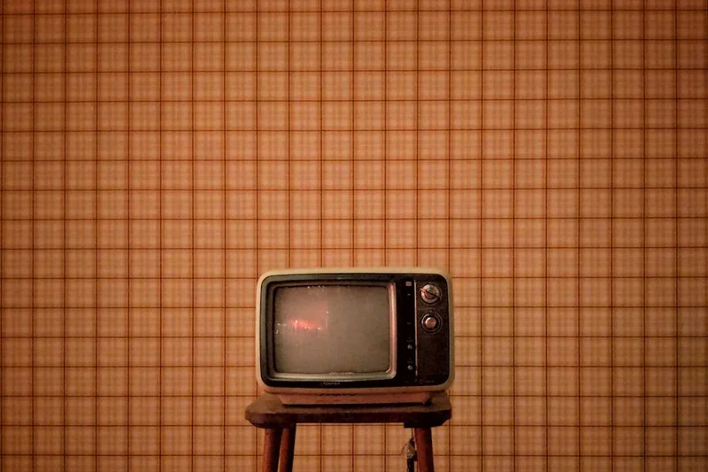
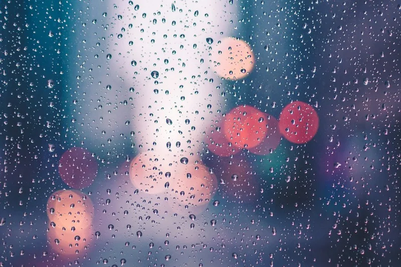

Sec 3 (الصف الثالث الثانوي)📖 SB pages 20 : 23 • Unit 1: Inside the World of CarePart Three: Lessons 4 & 5
Lessons 4 & 5: Beyond the White Coat & My Blog Post
المفردات الأساسية (8 كلمات)، المصطلحات والتعبيرات الاصطلاحية (Key Idioms)، المفردات التراكمية (25 كلمة)، التعريفات والمترادفات والمتضادات، المتلازمات وتعبيرات حروف الجر والمشتقات، دليل مهارة كتابة المدونة (Writing a Blog Post) والنماذج المقالية ونقاط الامتحان، القراءة التفاعلية المصورة (Storybook)، واختبار شامل مع محرك الكويز 🎯
🎯 مخرجات التعلم الوزارية (Learning Outcomes - Lessons 4 & 5: Beyond the White Coat & My Blog Post):
📖 Reading (Beyond the White Coat): Read a dramatic narrative about emergency room teamwork, car crash rescue, toddler foreign object removal, and compassionate patient care.
💬 Key Idioms: Understand and apply expressive medical & weather idioms: pale as a ghost, rain cats and dogs, and soaked to the skin.
✍️ Writing Mastery (Blog Post): Master the 4-part structure of a blog post (Catchy Title, Hook Intro, Body with Subheadings, Conclusion with CTA), tone, and style.
🩺 Vocabulary Precision: Use acute emergency and clinical vocabulary (clutch, forehead, groan, moan, scope, stitch, swallow, urgency).
🌟 1. المفردات اللغوية الأساسية موضع الامتحان (Key Vocabulary) - 8 كلمات
المفردات الأساسية المعتمدة كما وردت في كتاب الطالب (SB pages 20 : 23) مع النطق الصوتي التفاعلي والشرح الدقيق:
Verb (v)
clutch(ed)
المعنى: يمسك بقوة - يقبض بإحكام
💡 التوضيح: الإمساك بشيء أو بجزء من الجسم فجأة وبقوة شديدة بدافع الألم أو الخوف (مثل إمساك العامل بيده النازفة).
Noun (n)
forehead
المعنى: جبهة / جبين
💡 التوضيح: الجزء العلوي من الوجه الواقع فوق العينين وأسفل منبت الشعر.
Noun / Verb (n - v)
groan(ed)
المعنى: يتأوه - تأوه
💡 التوضيح: إصدار صوت عميق وممتد يعبر عن الألم الشديد، التعاسة، أو الانزعاج (أو تذمر الجماهير عند ضياع الهدف).
Noun / Verb (n - v)
moan(ed)
المعنى: يئن - أنين
💡 التوضيح: إصدار صوت خافت منخفض للتعبير عن الألم الجسدي أو الحزن العميق (مثل أنين المريض طوال الليل).
Noun (n)
scope
المعنى: منظار طبي - مجهر
💡 التوضيح: أداة أو جهاز طبي مزود بكاميرا وأنبوب مرن يُستخدم لفحص واستخراج الأجسام من داخل تجاويف الجسم.
Noun / Verb (n - v)
stitch(ed)
المعنى: غرزة / وخزة - يخيط الجرح / يغرز
💡 التوضيح: خياطة حواف الجرح معاً بإبرة وخيط طبي، أو وخزة وألم مفاجئ حاد في العضلات.
Verb (v)
swallow (ed)
المعنى: يبتلع
💡 التوضيح: جعل الطعام أو الشراب (أو جسم غريب كعملة معدنية) يتحرك من الفم إلى المريء فالمعدة.
Noun (n)
urgency
المعنى: إلحاح - ضرورة - حالة طارئة
💡 التوضيح: الأهمية القصوى التي تتطلب التعامل والتدخل الفوري دون أي تأخير في بيئات الرعاية الطارئة.
المصطلحات التعبيرية المقررة في كتاب الطالب مع المعنى الإنجليزي المعياري وأمثلة الامتحانات الوزارية:
Key Idiom
pale as a ghost
المعنى العربي: شديد الشحوب / باهت الوجه (من الخوف، الصدمة، أو المرض)
📖 التعريف الإنجليزي: Extremely pale, usually because of fear, shock, or illness.
💬 مثال الكتاب:“A construction worker, pale as a ghost, clutched his bleeding hand, trying not to cry out.” 💬 مثال آخر:“When my team received a goal in the last minute, I turned pale as a ghost.”
Key Idiom
rain cats and dogs
المعنى العربي: تمطر بغزارة شديدة / كأفواه القِرَب
📖 التعريف الإنجليزي: To rain very heavily.
💬 مثال الكتاب:“Outside, it was raining cats and dogs as Dr. Basem ran into the hospital.” 💬 مثال آخر:“It was raining cats and dogs, so the exam was postponed.”
Key Idiom
soaked to the skin
المعنى العربي: مبتل تماماً من الرأس إلى أخمص القدمين
📖 التعريف الإنجليزي: Completely wet from head to toe.
💬 مثال الكتاب:“Dr. Basem ran into the hospital, soaked to the skin.” 💬 مثال آخر:“I arrived home soaked to the skin after walking in the heavy rain.”
تعبيرات ومصطلحات الدروس 4 و 5 المعتمدة في امتحانات الثانوية العامة مع معرض صور توضيحية ونطق صوتي وشرح وسياق امتحاني:

🔍 انقر للتكبير والشاشة الكاملة
📸 تعبير مصور 1 من 6
pale as a ghost
شديد الشحوب / باهت (من الخوف أو المرض)
💡 التوضيح ببساطة:
شحوب الوجه الشديد والمفاجئ نتيجة الخوف الشديد، الصدمة العصبية، أو النزيف والألم.
💬 مثال من واقع امتحانات الثانوية العامة:
A construction worker, pale as a ghost, clutched his bleeding hand, trying not to cry out.
عامل بناء، شاحب كالشبح، أمسك بيده النازفة محاولاً ألا يصرخ من الألم.
1 / 6
Expression 1
pale as a ghost
المعنى: شديد الشحوب (من الخوف أو الألم)
💡 سياق النص:
عامل البناء المصاب في يده شاحب الوجه كالشبح في غرفة الطوارئ.
Expression 2
rain cats and dogs
المعنى: تمطر بغزارة طوفانية شديدة
💡 سياق النص:
العاصفة المطرية الشديدة خارج المستشفى أثناء وصول مصابي الحوادث.

Expression 3
soaked to the skin
المعنى: غارق في مياه المطر ومبتل تماماً
💡 سياق النص:
دخول د. باسم راكضاً للمستشفى وسط المطر وهو مبتل تماماً من رأسه لقدمه.
Expression 4
under pressure
المعنى: تحت الضغط الشديد وتراكم المهام
💡 سياق النص:
هدوء الممرضة نورا وتركيزها المهني في توجيه الفريق وسط فوضى الطوارئ.
Expression 5
without hesitation
المعنى: دون تردد / على الفور وبحسم
💡 سياق النص:
انطلاق فريق الطوارئ فوراً لاستخراج العملة وإنقاذ حياة الطفل الصغير.
Expression 6
come to an end
المعنى: يصل لنهايته / ينتهي
💡 سياق النص:
انتهاء ليلة طوارئ شاقة حافلة بالخوف والعمل الجماعي المنقذ للحياة مع شروق الفجر.
✍️ دليل مهارة كتابة المنشور التدويني (How to Write a Blog Post - صفحات 65 : 68)
❓ ما هي المدونة؟ (What is a Blog Post?)
المدونة (A blog post): هي مقال أو قطعة كتابية تُنشر على مدونة إلكترونية (موقع أو مجلة على الإنترنت). وتتميز المقالات التدوينية بالمواصفات الأربع الأساسية التالية:
1. Informal or semi-formal:
أسلوب غير رسمي أو شبه رسمي، كالتحدث مع صديق لكنه أكثر تنظيماً.
2. Engaging style:
أسلوب جذاب يهدف إلى لفت انتباه القارئ وشده للقراءة.
3. About a specific topic:
يركز على موضوع محدد يشارك فيه الكاتب معلومات أو آراء أو تجارب شخصية.
4. Not too long:
غير طويلة ومقسمة لفقرات قصيرة لتكون سهلة القراءة السريعة على الإنترنت.
🧱 أجزاء ومنظومة هيكل المدونة الناجحة (The 4 Parts of a Good Blog Post)
الجزء 1
1. Catchy Title (Headline)
الغرض (Purpose): جعل الناس يرغبون في النقر على الرابط وقراءة المقال فوراً (To make people want to click and read!).
💡 أمثلة من كتاب الوزارة:
• 5 Amazing Places to Visit in Summer
• My First Time Trying Sushi (and Why I Loved It!)
• Is Learning English Hard? My Opinion.
الجزء 2
2. Introduction (The Hook)
الغرض (Purpose): تقديم الموضوع وخطف اهتمام القارئ وجذبه بالـ (Hook) كسؤال مثير أو اقتباس أو حقيقة مشوقة.
💡 مثال المقدمة:
“Have you ever dreamed of traveling the world? For me, visiting new countries has always been a passion. Today, I want to share my recent trip to Japan...”
الجزء 3
3. Main Body (With Subheadings)
الغرض (Purpose): تطوير الأفكار وتقديم التفاصيل وشرح النقاط مع استخدام عناوين فرعية (Subheadings) لتقسيم الموضوع.
💡 أمثلة الفقرات:
• Paragraph 1 (Food): One of the best parts was food (sushi, ramen)...
• Paragraph 2 (Culture): Fascinated by traditional culture and tea ceremony...
الجزء 4
4. Conclusion (With CTA)
الغرض (Purpose): تلخيص الأفكار الرئيسية، وإعطاء فكرة ختامية، وختم المقال بدعوة لاتخاذ إجراء (Call to Action - CTA) كدعوة القراء للتعليق.
💡 مثال الخاتمة:
“Overall, my trip to Japan was an unforgettable experience... Have you ever been to Japan? What was your favorite part? Let me know in the comments!”
🌟 إرشادات اللغة والأسلوب (Tips on Language & Style):
1. استخدم لغة بسيطة وواضحة (Use simple, clear language).
2. اجعل الفقرات قصيرة (Keep paragraphs short - 2 to 5 sentences).
3. اكتب بنبرة ودية وشخصية (Write in a friendly, personal tone).
4. استخدم ضمير المتكلم (Use first person: "I", "we") إذا كان المنشور يحكي تجربة شخصية أو سردية.
5. أضف لغة تعبيرية وعواطف ومصطلحات اصطلاحية (Add expressive language, idioms or emotions) عند الاقتضاء.
📖 جدول مصطلحات التدوين المعتمدة (Blog Post Terminology):
Audience (الجمهور): The readers the post is intended for (e.g. teenagers, students, general public).
Blog (المدونة): A regularly updated website or journal that contains individual entries called blog posts.
Blog Post (منشور المدونة): A single article or entry published on a blog.
Call to Action (CTA): A sentence encouraging the reader to take an action (e.g., comment, share, subscribe).
Catchy Title: A headline designed to attract clicks and grab the reader's attention.
Hook (الخاطف): An engaging opening that grabs the reader's attention (a question, quote, fact, or anecdote).
Subheading (عنوان فرعي): A smaller heading used to divide sections of a blog post for easier reading.
Tone (نبرة الكاتب): The style or attitude of the writer, such as formal, informal, humorous, or serious.
Topic (الموضوع): The subject or theme of the blog post.
Transition Words: Words like first, next, however, finally that help connect ideas smoothly.
📝 النماذج المقالية التدريبية (Model Exercises: 5 Reasons to Visit Aswan in Winter - ص 67)
Model 1: Introduction
المقدمة النموذجية (Intro)
“Have you ever dreamed of escaping the cold while still enjoying the magic of winter? Aswan, one of Egypt’s most charming cities, offers the perfect warm-weather getaway during the cooler months. With its golden sunshine, peaceful Nile views, and rich cultural heritage, Aswan becomes a magical destination between November and February. Whether you’re a history lover, an adventure seeker, or simply someone looking to relax, Aswan in winter has something just for you. In this post, I’ll share five great reasons why this southern gem should be at the top of your winter travel list.”
Model 2: Body Paragraph
فقرة الموضوع النموذجية (Body)
“Unlike other tourist hotspots, Aswan stays calm and uncrowded during winter. This means you can explore temples like Philae or stroll along the Nile without being rushed or surrounded by large groups. The peaceful atmosphere allows you to truly connect with the history and beauty around you. Local markets are less busy, so you can chat with friendly vendors and take your time picking souvenirs. Even the felucca rides feel more personal and relaxed. It’s the perfect setting for travelers who enjoy slow, meaningful experiences.”
Model 3: Conclusion
الخاتمة النموذجية (Conclusion)
“To conclude, Aswan in winter offers more than just sunshine—it gives you peace, culture, and unforgettable memories. From its mild weather to peaceful sights, it’s the perfect winter escape. You can enjoy local life, explore history, and relax by the Nile. Whether you’re an adventurer, a culture lover, or just someone who needs a break. To sum up, Aswan welcomes you warmly. So, why wait? Pack your bags and discover the magic of Aswan this winter!”
🎯 نقاط مهارة الكتابة لأسئلة الاختيار من متعدد في الامتحان (Writing in Points - ص 68)
1
A blog post is an article or a piece of writing published on a blog.
2
Blog posts are usually written in an informal or semi-formal style.
3
The writer of a blog post uses an engaging style to catch the reader’s attention.
4
A blog post usually focuses on a specific topic.
5
A blog post may include information, opinions or personal experiences.
6
A blog post should not be too long, so it is easy to read online.
7
The structure of a good blog post consists of four parts: a catchy title, an introduction, a main body and a conclusion.
8
The title should be catchy and clear and should summarize the content of the post.
9
In the introduction, we present the topic and start with a hook.
10
A hook is an engaging opening such as a question, a quote, a fact or an anecdote.
11
In the main body, we develop our ideas, provide details and explain our points.
12
We can use subheadings to divide the blog post into sections and make it easier to read.
13
We should use simple, clear language, short paragraphs and a friendly, personal tone.
14
In a personal or narrative blog post, we usually use the first person, such as “I” and “we”.
15
In the conclusion, we summarize the main points, give a final thought and may end with a call to action (CTA). We also use transition words such as first, next, however and finally to connect ideas smoothly.
📚 القراءة التفاعلية المصورة (Interactive Storybook - 7 مشاهد كاملة)
💡 Beyond the White Coat & My Blog Post: استمتع بقراءة نصوص كتاب الطالب المعتمدة (الدرس 4 و 5) عبر محرك الكتاب التفاعلي ثلاثي الأبعاد مع اللوحات التوضيحية البصرية الدقيقة، القارئ الصوتي التلقائي (Auto Storyteller)، الترجمة المعتمدة، وشارات المفردات اللغوية.
🖼️ Scene 1 of 4
Paramedics rushing car crash victim into hospital during heavy rainstorm
📖 Beyond the White Coat (SB p. 20)Page 1 / 4
Scene 1: Paramedics Rush In & Stormy Arrival
Last night, paramedics rushed in with a man injured in a car crash. He had broken his leg before arrival, and his face was covered in blood. Nurses quickly took him for X-rays while Dr. Maha prepared to stitch a deep cut on his forehead. “Teamwork saved him,” said the emergency room “ER” director proudly. Outside, it was raining cats and dogs as Dr. Basem ran into the hospital, soaked to the skin.
💡 الترجمة المعتمدة:
في الليلة الماضية، هرع المسعفون برجل أصيب في حادث سيارة. كان قد كُسرت ساقه قبل وصوله، وكان وجهه مغطى بالدماء. سارعت الممرضات بنقله لإجراء أشعة سينية بينما استعدت الدكتورة مها لخياطة جرح عميق في جبهته. قال مدير غرفة الطوارئ بفخر: "لقد أنقذه العمل الجماعي". وفي الخارج، كانت السماء تمطر بغزارة شديدة عندما ركض الدكتور باسم إلى داخل المستشفى مبتلاً تماماً من رأسه لقدمه.
paramedics rushed in (هرع المسعفون)car crash (حادث سيارة)stitch (يخيط الجرح)forehead (جبهة / جبين)raining cats and dogs (تمطر بغزارة)soaked to the skin (مبتل تماماً)